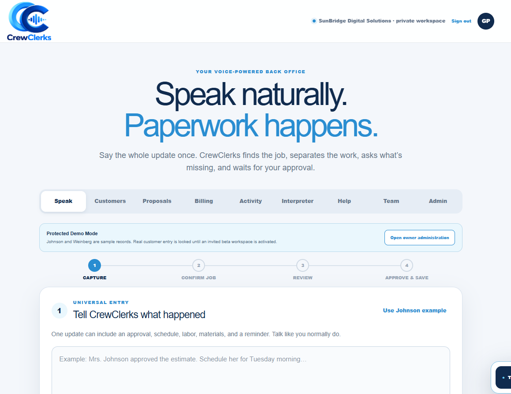
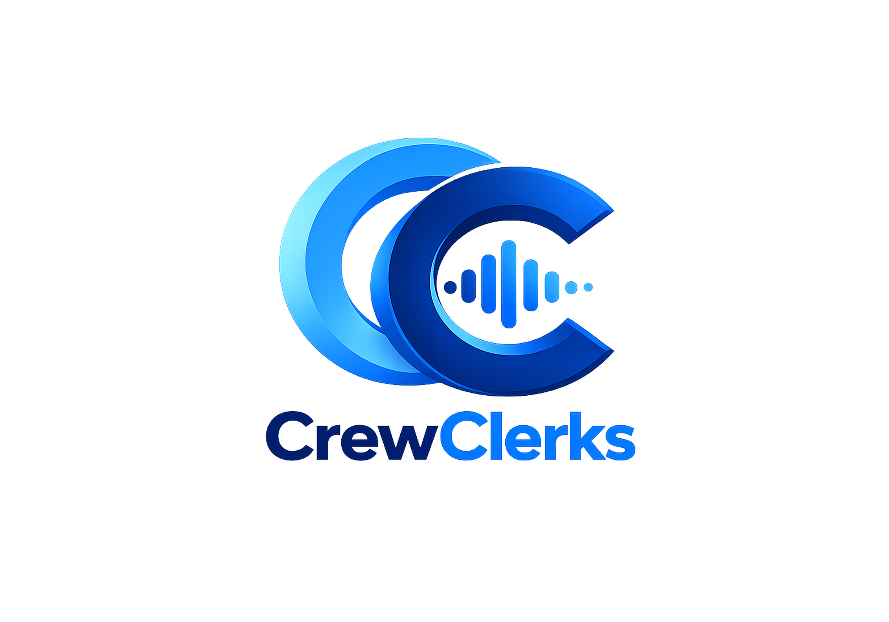

01


WORKING PRODUCT PROTOTYPE
Speak naturally. Paperwork happens.
VOICE-POWERED FIELD OPERATIONS
Crew Clerks
A voice-first concept for service businesses that captures customer information, labor, materials, estimates, change orders and field updates through natural conversation.